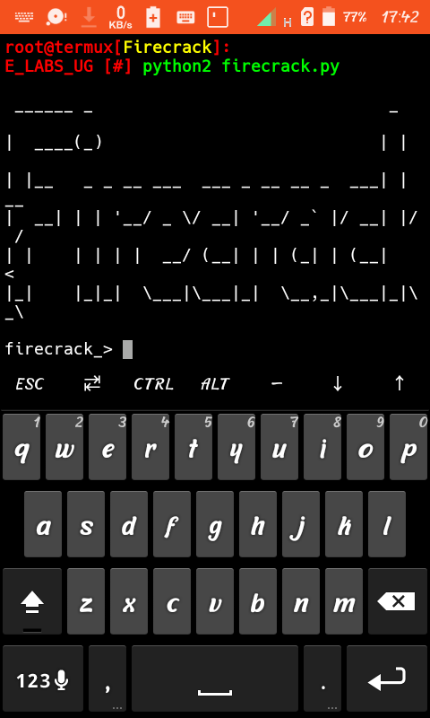
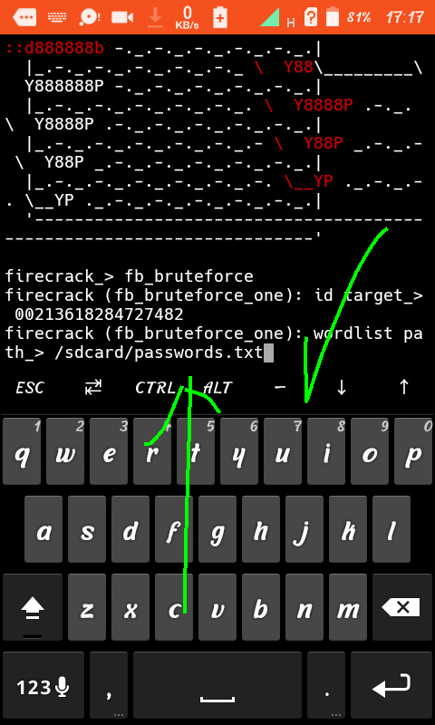

After installation of all requirements...no red texts diaplayed, type the command below
$ python2 Firecrack.py
It will display a banner as shown below..

type "help" to see usage..
So..to begin fb hacking..,type "fb_bruteforce"
Then you will be asked to input victim fb id..
To get it, go to facebook and go to your victim's profile then click "..." which will display "copy to profile clipboard" then click it..
Return to termux and paste it then hit enter..
You will then be asked to input path to your passwordlist as shown below..

After correct path input..,cracking will begin..it will now depend on your network speed and please :Donot let your phone sleep during the cracking process.. After cracking process is done, the victim password will be displayed....
To download passwordlist..